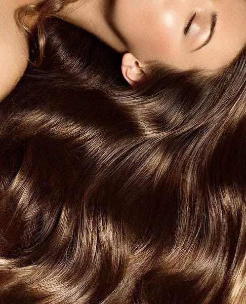

Frizzy Hair
Frizzy hair happens when the hair loses moisture and becomes dry and hard to control.
Causes
- Lack of moisture in the hair
- Humidity and weather changes
- Frequent heat styling (straighteners, blow dryers)
- Using harsh shampoos with sulfates
- Over-washing hair
- Dry or damaged hair structure
- Not using conditioner regularly
Treatment
- Using moisturizing shampoos and conditioners
- Applying hair masks weekly
- Using leave-in conditioner or anti-frizz serum
- Reducing heat styling tools
- Air drying hair instead of blow drying
- Using wide-tooth comb for detangling
- Keeping hair hydrated with oils
Best Oils
- Argan oil → smooths frizz and adds shine
- Coconut oil → deeply moisturizes and reduces dryness
- Jojoba oil → balances moisture and softens hair
- Almond oil → helps control frizz and improves texture
- Olive oil → nourishes and reduces roughness
Warnings
- Avoid washing hair with hot water
- Do not overuse heat styling tools
- Avoid sulfates and alcohol-based products
- Do not brush hair when it’s very dry aggressively
- Avoid skipping conditioner
- Don’t expose hair to humidity without protection

After treatment
Back